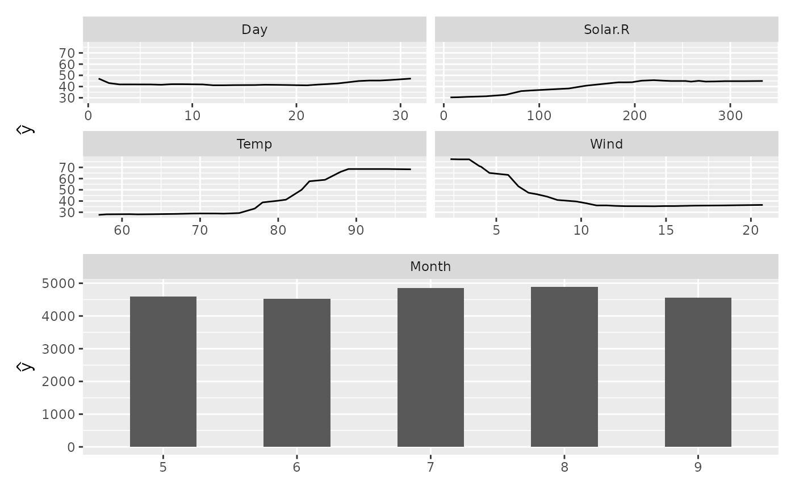

Produces ggplot2 partial dependence curves from the named list returned by
gg_partial. Continuous predictors are shown as line plots;
categorical predictors are shown as bar charts. Both panels are faceted by
variable name so multiple predictors can be compared at a glance.
Usage
# S3 method for class 'gg_partial'
plot(x, ...)Arguments
- x
A
gg_partialobject (output ofgg_partial).- ...
Not currently used; reserved for future arguments.
Value
A ggplot (or patchwork) object. When only one
variable type is present a single ggplot is returned. When both
continuous and categorical variables are present the two panels are
combined vertically via patchwork::wrap_plots(), which also
satisfies inherits(p, "ggplot").
Examples
set.seed(42)
airq <- na.omit(airquality)
rf <- randomForestSRC::rfsrc(Ozone ~ ., data = airq, ntree = 50)
pv <- randomForestSRC::plot.variable(rf, partial = TRUE, show.plots = FALSE)
pd <- gg_partial(pv)
plot(pd)
